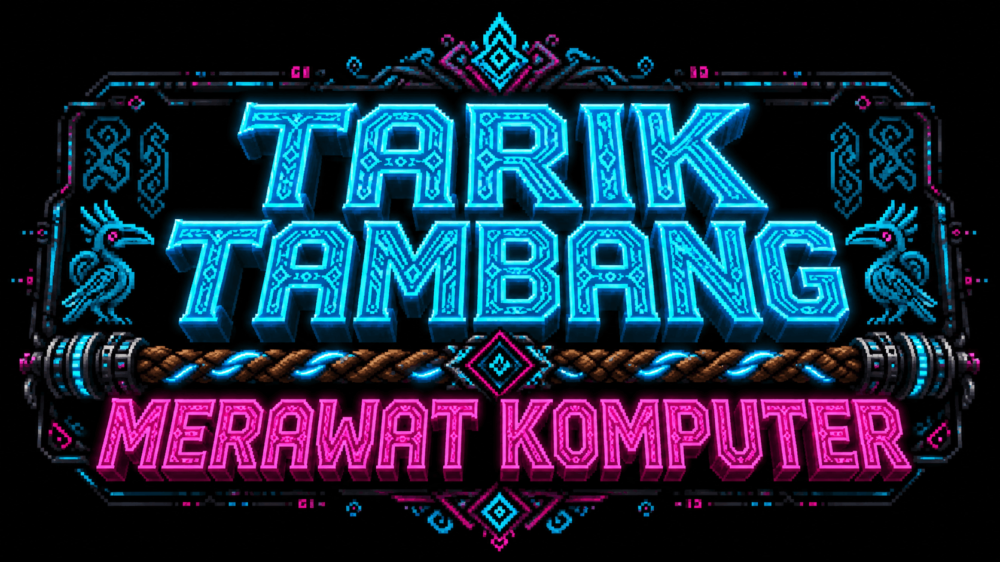
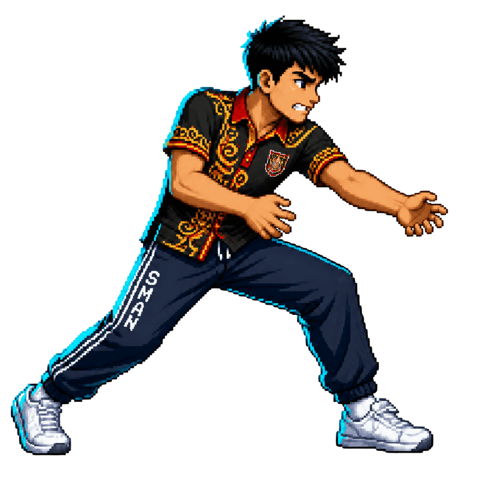
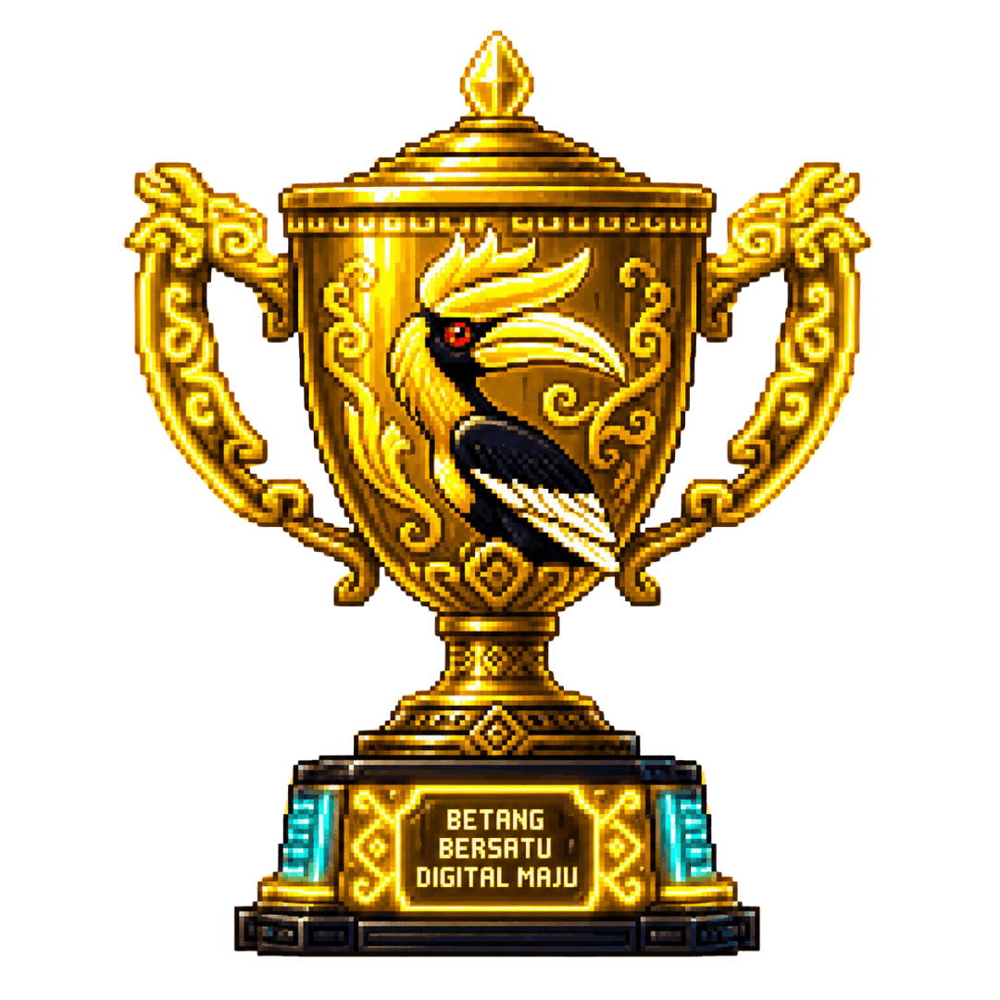

Modul: Merawat Komputer, Merawat Produktivitas
*Tekan dan tahan logo game selama 3 detik untuk masuk Mode Guru*
Pilih Mode Pemain
MASUKKAN NAMA
PLAYER 1_
PLAYER 2
*Bisa juga mengetik pakai keyboard fisik / remote
Pengaturan Sesi
Tingkat Kesulitan:
Waktu Permainan:
PLAYER 1
SKOR: 0
60
PLAYER 2
SKOR: 0

Memuat pertanyaan...
Memuat pertanyaan...

WAKTU HABIS!
Player 1 Menang!
Skor Kiri: 0
Skor Kanan: 0
🏆 TOP 10 PERAWAT PC 🏆
| Peringkat | Nama/Tim | Skor |
|---|
🔒 MODE GURU
Masukkan PIN untuk akses:
🛠️ DASHBOARD GURU
Bank Soal dimuat dari kode HTML. Edit file HTML dengan Notepad untuk mengubah pertanyaan secara permanen.
Status Soal Saat Ini: